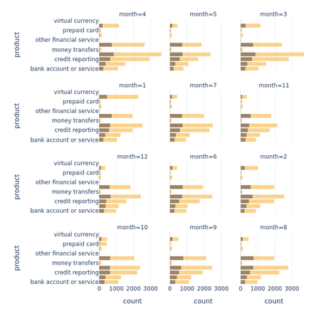
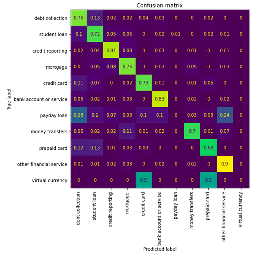
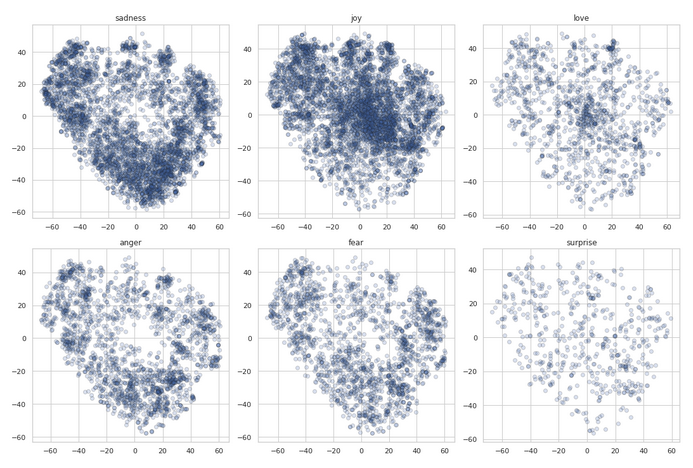
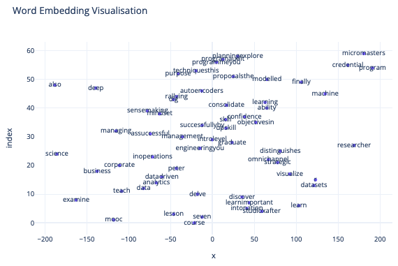
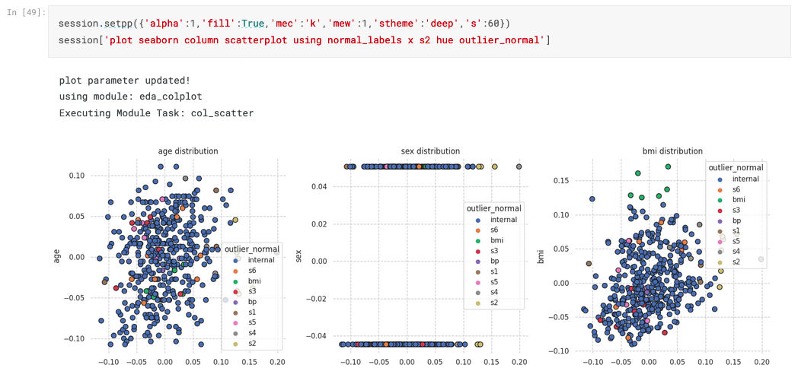
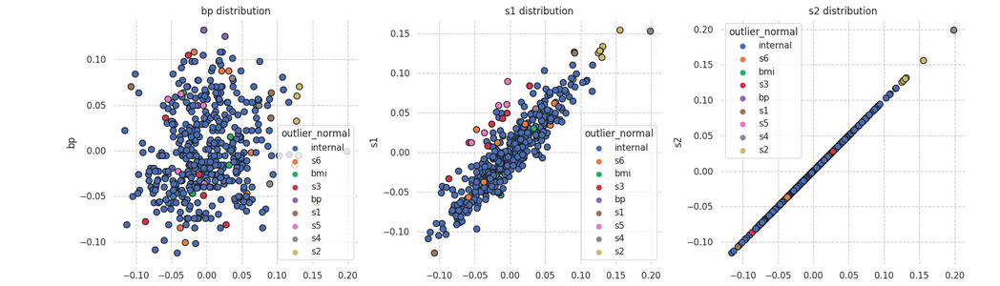
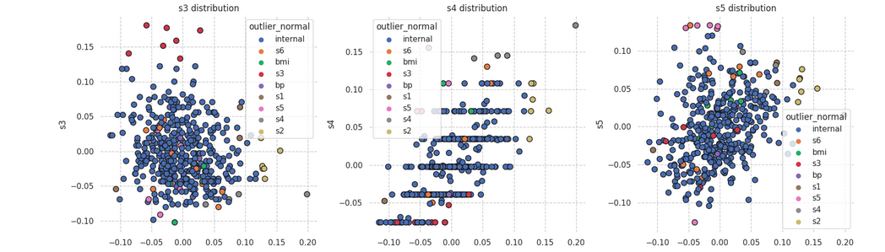
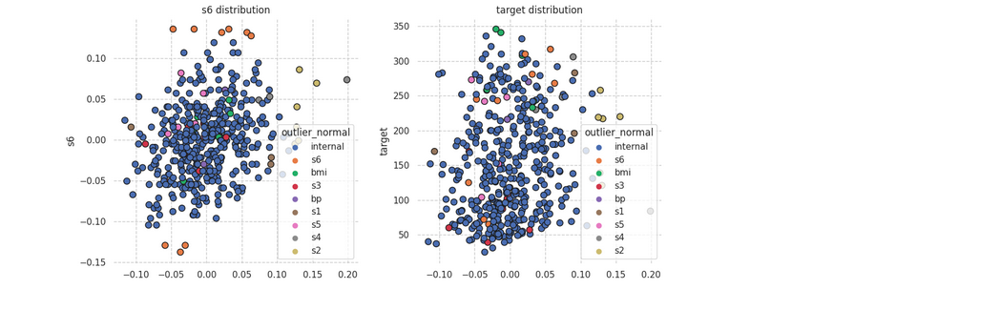

Natural Language Processing
Natural Language Processing
Natural language processing (NLP) is a branch of artificial intelligence (AI) that deals with the interaction between computers and humans using natural language. It involves the development of algorithms and computational models that can understand, analyze, and generate human language.
Banking Consumer Complaint Analysis
In this study, we aim to create an automated ticket classification model for incoming text based complaints, which is a multiclass classification problem. Such a model is useful for a company in order to automate the process of sorting financial product reviews & subsequently pass the review to an experient in the relevant field. We explore traditional ML methods, which utilise hidden-state BERT embedding for features, as well as fine-tune DistilBert for our classification problem & compare the two approaches


Twitter Emotion Classification
In this study, we fine-tune a transformer model so it can classify the sentiment of user tweets for 6 different emotions (multiclass classification). We first create a baseline by utilising traditional ML methods that use extracted BERT embeddings for features, then we will turn to a more complex transformer encoder, DistilBert & fine-tune its model weights for our classification problem

edX Course Recommendations
In this study, we create an NLP based recommendation system which informs a user about possible courses they make like, based on a couse they have jusy added. We will utilise scrapped edX course description data, clean the text data and then convert document into vector form using two different approaches BoW based TF-IDF and word2vec, then calculate the consine similarity, from which we will be able to extract a list of courses which are most similar and so can be recommended.

Banking User Review Analysis & Modeling
(1) Parsing Dataset
In this study we look at the parsing/scraping side of data. Its no secret that a lot text important information is stored on websites, as a result, for us to utilise this data in our of analyses and modeling, we need a way to extract this information, this process is referred to website parsing. For this example, we'll look at a user service review website, which stored user reviews on a variety of services and objects. We'll be parsing a common banking service & follow up with an exploratory data analysis, which should tell us about the contents of our extracted text data.
(2) Banking Product Review Sentiment Modeling
In this notebook, we look at creating a sentiment model based on traditional NLP machine learning approaches. We will be using the parsed dataset about bank service reviews, which consists of ratings as well as recommend/don't recommend type labels. We'll be using TF-IDF & Word2Vec methods to encode text data & use typical shallow and deep tree based enseble models. Once we have found the best performing approaches, we'll be doing a brute force based GridSearchCV hyperparameter optimisation in order to tune our model. After selecting the best model, we'll make some conclusions about our predicts & make some future work comments.
mllibs
mllibs is a project aimed to automate various processes using text commands. Development of such helper modules are motivated by the fact that everyones understanding of coding & subject matter (ML in this case) may be different. Often we see people create functions and classes to simplify the process of code automation (which is good practice) Likewise, NLP based interpreters follow this trend as well, except, in this case our only inputs for activating certain code is natural language. Using python, we can interpret natural language in the form of string type data, using natural langauge interpreters mllibs aims to provide an automated way to do machine learning using natural language




NER with preset tools (re,natasha)
In this notebook, we look at how to utilise the natasha & re libraries to do predefined NER tagging. natasha comes with already predefined set of classification labels, whilst re can be used to identify capitalised words using regular expressions. These tools, together with lemmatisers from pymorphy2 allow us to very easily utilise ready instruments for named entity recognition in documents without any model training.
В этом проекте мы воспользуемся готовым инструментов для распознования именованных сущностей natasha. Библиоека работает только с русским языком. В русском часто всречаются и именованные сущности с латинскими буквами, поэтому воспользуемся регулярными выражением и лематизацией для того чтобы дополнить результаты NER c natasha
Training a NER model with GRU
Training NER model using GRU
In this project, we train a neural network NER model based on GRU architecture, which can recognise named entities using BIO tags based on car user review data. Unlike the previous notebook, the concept of NER is used a little more abstractly, we are interested in any markups for word(s) that we create in the text, not just names. For markups we use tags that describe the quality of the car (eg. appearance, comfort, costs, etc.). The model learns to classify tokens in the text that belong to one of the tag classes. Recognition of such labels is convenient for quick understanding of the content of the review.
Создаем Модель Распознования Именованных Сущностей
В этом проекте мы обучаем нейросетевую NER модель на основе GRU, которая может распозновать именнованные сущности используя BIO разметку на отзывах пользователей автомобилей. В отличий от предыдущего ноута понятие NER используется немного более абстрактно, нас интересует любые разметки которые мы разметим в тексте, а не только имена и тд. В качестве разметок используем тэги которые описывают качество автомобиля (eg. appearance, comfort, costs, и тд.). Модель учится классифицировать в тексте токены которые относятся к одному из тэговых классов. Распознование таких меток удобно для быстого понимания содержания отзыва.
I also post additional NLP content on my blog: other NLP projects
Thank you for reading!
Any questions or comments about the above post can be addressed on the mldsai-info channel or to me directly shtrauss2, on shtrausslearning or shtrausslearning